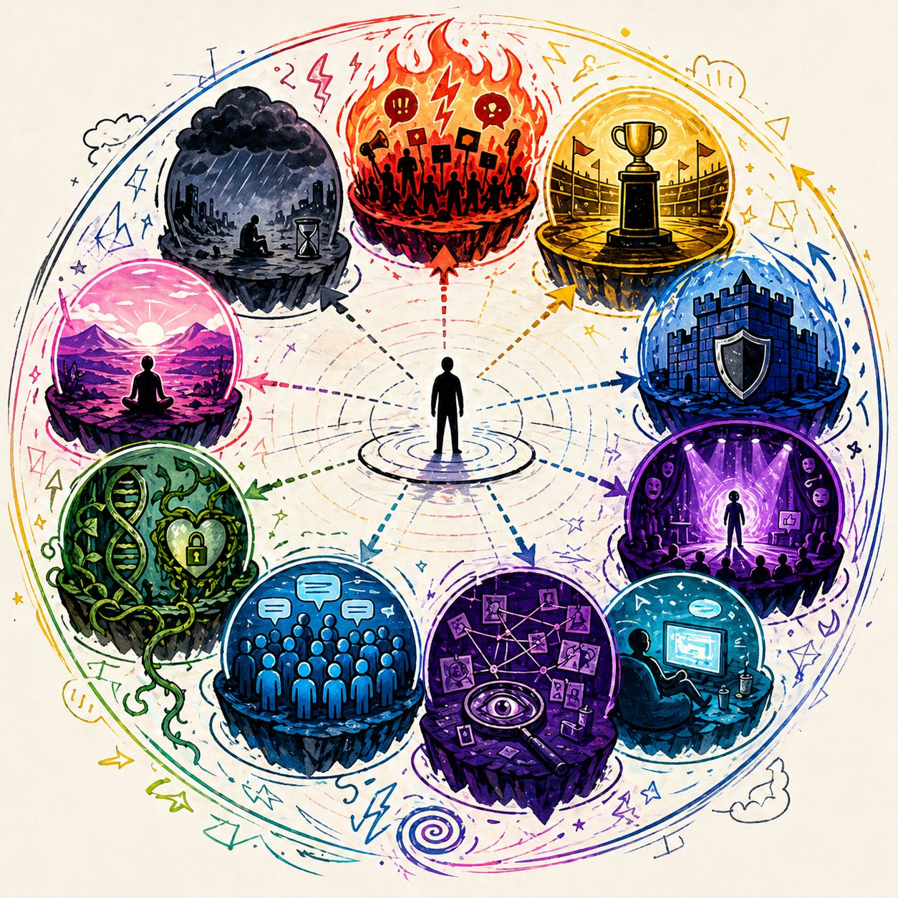

These are not personalities.
Not beliefs.
Not “types of people.”
These are conditions of perception people temporarily inhabit.
You don’t become these.
You drift into them.
Atmosphere: heated, urgent, confrontational
Baseline Feeling: something is wrong right now
Perception Effects:
neutral = suspicious
disagreement = threat
silence = complicity
Behavior Drift:
rapid reactions
moral framing of everything
constant correction impulses
Atmosphere: heavy, fatalistic, collapsing
Baseline Feeling: it’s too late
Perception Effects:
solutions feel naive
positive signals feel fake
future feels closed
Behavior Drift:
disengagement
passive consumption
existential scrolling
Atmosphere: competitive, performative
Baseline Feeling: everything is a ranking
Perception Effects:
conversations = contests
people = opponents or assets
silence = losing
Behavior Drift:
dominance signaling
comparison loops
strategic interaction
Atmosphere: guarded, reactive, tense
Baseline Feeling: I must protect something
Perception Effects:
questions feel like attacks
nuance feels unsafe
disagreement feels personal
Behavior Drift:
quick rebuttals
identity anchoring
argument pre-loading
Atmosphere: staged, observed, curated
Baseline Feeling: I am being seen
Perception Effects:
authenticity becomes secondary
actions are filtered through audience reaction
self = presentation
Behavior Drift:
signaling over substance
alignment displays
fear of misstep
Atmosphere: flat, detached, low signal
Baseline Feeling: nothing really matters
Perception Effects:
intensity feels distant
meaning feels diluted
urgency doesn’t land
Behavior Drift:
endless passive consumption
avoidance of depth
emotional shutdown
Atmosphere: suspicious, hyper-patterned
Baseline Feeling: something hidden is controlling this
Perception Effects:
randomness feels intentional
coincidence becomes pattern
trust collapses
Behavior Drift:
constant decoding
narrative construction
isolation from counter-signals
Atmosphere: smooth, unified, frictionless
Baseline Feeling: everyone agrees
Perception Effects:
opposing views feel rare or absurd
consensus feels natural, not constructed
deviation feels extreme
Behavior Drift:
overconfidence
dismissal of outside input
identity reinforcement
Atmosphere: intense, personal, absolute
Baseline Feeling: this is me
Perception Effects:
ideas = self
criticism = injury
change = threat
Behavior Drift:
rigid positions
emotional defense
inability to detach
Atmosphere: quiet, observational, spacious
Baseline Feeling: let me see clearly
Perception Effects:
signals are slowed down
emotion is noticed, not obeyed
identity is flexible
Behavior Drift:
pause before reaction
curiosity over certainty
selective engagement
People argue across habitats without realizing they’re in different environments.
🔥 Outrage
🌫️ Doom
🏟️ Status Arena
They are not just disagreeing.
They are perceiving from different worlds.
You don’t need to destroy habitats.
You need to:
👉 recognize which one you're in
Because the moment you see the environment...
...it stops feeling like reality and starts feeling like a condition.